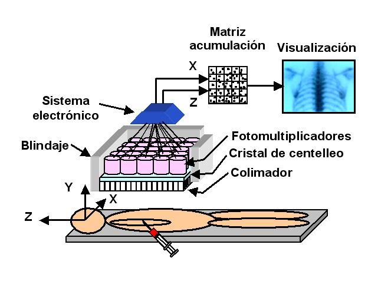
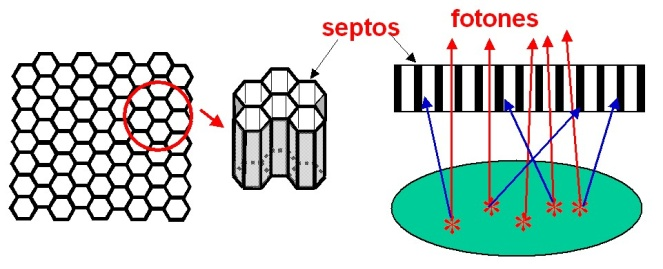
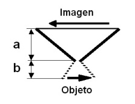
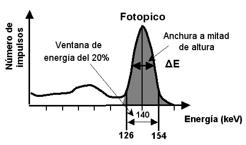
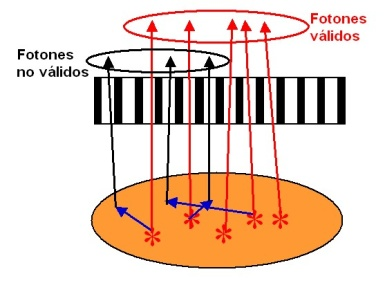
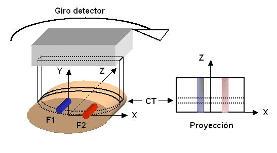
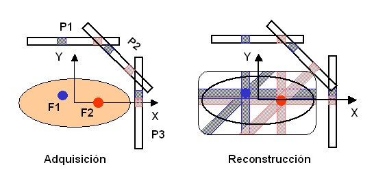

Fig. 8 A) Imagen del TC. B) Imagen del SPECT. C) Fusión SPECT+TC
Jesús Félix Fontestad, Miguel Guasp Carrascosa, Teresa García Martínez
La obtención de imágenes en medicina nuclear (MN), está basada en la detección de la radiación emitida por una sustancia radiactiva que recibe el nombre de radiotrazador o radiofármaco (RF) y que previamente se le ha suministrado al paciente. Se emplean emisores de radiación γ o emisores de positrones en los que se utilizan los fotones γ (gamma) de 511 keV resultantes de la reacción de aniquilación.
El resultado es una imagen que representa la distribución del RF en el interior del paciente, que recibe el nombre de imagen de emisión. Al proceso por el que se obtiene la información para la generación de la imagen se le denomina adquisición. Existen dos tipos de imágenes:
1.- Planares: Se representa la distribución del RF vista desde un determinado ángulo, por lo que no se dispone de información en profundidad.
2.- Tomográficas: Se obtienen cortes en planos (transaxial, coronal y sagital) de la distribución del RF. Existen dos técnicas de exploración: la tomografía de emisión de fotón único (SPECT) en el que la imagen final se genera a partir de la reconstrucción mediante un algoritmo matemático de imágenes planares, obtenidas en ángulos distintos y la tomografía de emisión de positrones (PET), en la que se la reconstrucción de la imagen se realiza a partir de la detección de los pares de fotones procedentes de cada reacción de aniquilación.
El equipo utilizado para generar imágenes planares y SPECT es la gammacámara.
En la Fig. 1 se representan los constituyentes fundamentales que componen una gammacámara. Su funcionamiento consiste en detectar los fotones γ procedentes del paciente, seleccionándose los correspondientes al fotopico y calculando las coordenadas (x,z) de la posición de la detección, los valores (x,z) se utilizan para seleccionar a los elementos de una matriz en la que se acumula el número de fotones con a la misma posición. Finalmente los valores de la matriz se convierten en una imagen según una escala de grises o de color. A continuación se presentan sus principales componentes y funcionamiento de los mismos.
|  |
|
Figura 1.- Gammacámara |
Está formado por una lámina de plomo o tungsteno, en la que se han practicado unos orificios, que permiten el paso de los fotones que inciden sobre ellos, mientras que los incidentes sobre las paredes son atenuados (Fig. 2). Las paredes de los orificios reciben el nombre de “septos”.
|  |
|
Figura 2.- Colimador paralelo |
La función del colimador es evitar que se superpongan los fotones provenientes de distintas zonas del paciente en una misma sección de la imagen. De esta forma, se genera una imagen en la que cada porción de la misma se corresponde con un único volumen del paciente. Según la disposición de los orificios el colimador recibe el nombre de paralelo (mayor uso), divergente y convergente.
|  |
|
Figura 3.- Pin-hole |
Otros parámetros son el espesor del colimador y el espesor de los septos, que clasifica a los colimadores para su uso con emisores de alta, media o baja energía; el tamaño de los orificios, que influye en la resolución, pudiéndose ser de baja o alta resolución y el espesor de los septos. Un tipo particular, es el colimador pin-hole, que consta de un único agujero (Fig. 3), con el que se obtiene una imagen invertida y con un tamaño respecto al objeto, dado por la relación entre a y b.
En el cristal de centelleo se produce una conversión de la energía de los fotones γ incidentes (que han atravesado el colimador) en destellos luminosos (fotones de luz). La cantidad de fotones de luz producidos es proporcional a la energía de los fotones incidentes.
La eficiencia de conversión depende del tipo de material del cristal y de su espesor. Para un material dado, la eficiencia aumenta al aumentar espesor.
En las gammacámaras el material utilizado de manera general es el INa(Tl) (Yoduro de sodio activado con talio), por la buena eficiencia que presenta, aunque tiene el inconveniente de ser higroscópico.
Son unas válvulas electrónicas en las que se produce una conversión de la luz que incide sobre ellas (proveniente del cristal de centelleo), en un impulso eléctrico de altura proporcional a la intensidad de la luz incidente.
Los fotomultiplicadores están en contacto con el cristal de centelleo a través de una grasa óptica, que favorece la trasmisión de los fotones de luz. Dado que la cantidad de luz es proporcional a la energía de los fotones incidentes sobre el cristal de centelleo, la altura del impulso eléctrico resultante es proporcional a la energía de los fotones.
Agrupando los impulsos por su altura y contándolos durante un determinado tiempo, se obtiene lo que se conoce como el espectro gamma. En la Fig. 4 se presenta el espectro gamma para el 99mTc, que al ser un emisor gamma de 140 keV, aparece el fotopico correspondientes a dicha energía.
|  |
|
Fig. 4.- Espectro gamma del 99mTc, con indicación de una ventana de energía del 20% y la anchura de energía a mitad de la altura (ΔE). |
Cada destello luminoso es detectado por varios fotomultiplicadores y los impulsos que se obtienen son tratados por el sistema electrónico, de tal forma que a partir de la altura de estos impulsos asociada a la posición de los fotomultiplicadores permite obtener las coordenadas (x, z) del origen del destello.
Por otro lado, a partir de la suma de todos los impulsos que ha producido un destello luminoso, se determina la energía del fotón g que los ha producido; si la energía se corresponde con el fotopico del radionucleido y dentro de la ventana de energía seleccionada, y por lo tanto correspondiente a un fotón g que no ha sufrido ninguna interacción en el interior del paciente (Fig. 5), la detección se acepta como válida y se utilizan las coordenadas (x, z) como los índices de una celda en la matriz de acumulación y se incrementa en una unidad el valor de la celda.
|  |
|
Figura 5.- Los fotones que han sufrido interacción no contribuyen a la formación de la imagen. |
Al finalizar la adquisición, en cada celda de la matriz de acumulación, se encuentra un valor que se corresponde con el número total de eventos que se han detectado correspondientes a un único valor de coordenadas (x, z). Tras codificar estos valores según una escala de grises o de color, se representan sobre una pantalla de visualización. Cada elemento de la imagen recibe el nombre de píxel y se corresponde con una celda de la matriz. Las imágenes generadas tienen un tamaño de 64x64, 128x128, 256x256 o 512x512 píxeles.
Cuatro son los parámetros fundamentales en una gammacámara: Resolución espacial (RE), sensibilidad, uniformidad y resolución energética.
Cuando estos parámetros se determinan sin incluir el colimador se designan como intrínsecos y si lo incluyen extrínsecos.
La RE se puede definir como la capacidad de reproducir los detalles de la distribución del radiofármaco, cuanto mayor es la resolución se puede observar una distribución de menor volumen.
La RE del sistema o extrínseca, depende de:
La sensibilidad se define como la capacidad para detectar los fotones emitidos desde el objeto (paciente). Para una actividad de radiofármaco suministrada al paciente, cuanto mayor sea la sensibilidad, menor será el tiempo necesario para obtener un determinado número de eventos detectados o bien a la inversa, si se mantiene el tiempo de adquisición se podrá disminuir la actividad administrada.
La sensibilidad depende de los siguientes factores:
Es la capacidad que tiene la gammacámara para responder con una tasa de cuentas constante por unidad de superficie, cuando se la somete a una fuente de radiación uniforme sobre la superficie del detector.
Este parámetro pone de manifiesto la capacidad del detector en distinguir por separado energías de radiación próximas entre si.
Se define como el ancho del fotopico a mitad de altura respecto la energía del fotopico (del inglés FWHM) expresado en tanto por cien. Cuanto menor es dicho valor mejor es la resolución.
El equipo utilizado es una gammacámara planar, con uno o más detectores, provistos de un colimador paralelo. Para su funcionamiento los detectores giran alrededor de paciente (360º en el caso de un único detector), obteniendo una imagen planar (proyección) a intervalos regulares en un proceso que se denomina adquisición.
En la Fig. 6 se representa una de estas proyecciones que se obtendría en el caso de una distribución de dos fuentes F1 y F2 y sobre la proyección se ha resaltado uno de los posibles cortes transversales CT.
|  |
|
Figura 6.- SPECT |
Existen diversos algoritmos matemáticos que utilizando la información de las proyecciones consiguen obtener la distribución volumétrica del radiofármaco. Uno de los empleados es el denominado “algoritmo de retroproyección”, con el que se realiza la suma sobre una matriz de imagen de los valores correspondientes a cada proyección, teniendo en cuenta el ángulo de adquisición.
Como ejemplo de este algoritmo, en la Fig. 7 se muestran las proyecciones P1, P2 y P3 para la distribución de la Fig. 5, y como a partir de ellas se realiza la reconstrucción.
|  |
|
Figura 7.- SPECT: Adquisición y reconstrucción |
Cuanto mayor sea el número de proyecciones realizadas la imagen obtenida se aproximará más a la realidad. En la práctica el número de proyecciones de adquisición varía con el tamaño de la matriz de imagen, por ejemplo para obtener CT con una matriz de imagen de 64x64, pueden ser necesarias 120 proyecciones con un intervalo de 3º para una gammacámara con una cabeza de detección.
Este algoritmo de retroproyección indicado da lugar a imágenes que presentan artefactos en las zonas de intersección de las proyecciones, la utilización de filtros matemáticos aplicados a los datos de las proyecciones, permite su eliminación y el algoritmo se denomina retroproyección filtrada.
Las imágenes obtenidas a partir de las proyecciones están afectadas por varios factores, tales como la dispersión o la atenuación que los fotones sufren en el recorrido por el interior del paciente hasta el detector. Por ejemplo una distribución uniforme de un radiofármaco en un cilindro, como consecuencia de la atenuación de los fotones, daría lugar a una imagen de actividad no uniforme y de forma que en el centro presentaría menor actividad que en la periferia.
Existen diversos métodos para compensar el efecto de la atenuación, uno de ellos muy usado en los equipos comerciales es el método de Chang, que asume un coeficiente de atenuación constante para todo el contorno explorado, que depende del radiofármaco empleado. Este método resulta aceptable cuando se trata de exploraciones de cerebro y abdomen, pero no tanto en el caso del tórax o de la zona pélvica en los que los tejidos existentes tienen un coeficiente de atenuación muy distinto.
Una alternativa a este método es utilizar los coeficientes de atenuación en cada región, que se pueden obtener mediante la realización de una TC y de aquí surgen a finales del siglo XX los equipos SPECT/TC, que combinan el SPECT y un TC en el mismo equipo, que en los equipos modernos se instalan en tándem, de forma que en una única exploración se adquieren las imágenes de SPECT y la del TC.
La combinación de la imagen funcional del SPECT y la anatómica del TC, permite una mejora importante. En la Fig. 8, se presenta un ejemplo de una exploración de este tipo.
| |
||
|
Fig. 8 A) Imagen del TC. B) Imagen del SPECT. C) Fusión SPECT+TC |
||
Los procedimientos de control de calidad del equipamiento en MN son una parte esencial dentro del programa de garantía de calidad en MN, cuyo objetivo es el optimizar la dosis absorbida recibida por los pacientes como consecuencia de las exploraciones o tratamientos terapéuticos realizados con radiofármacos.
En España, el RD1841/1997 de 5 de diciembre (BOE 19/12/97) establece los criterios de calidad en MN y en el mismo se establecen las pruebas mínimas a realizar en el equipamiento, que abarca desde su montaje y durante el uso rutinario del mismo mediante pruebas periódicas.
Finalizado el montaje del equipo y previo a su uso clínico, se le realizará por el suministrador y en presencia del especialista en Radiofísica Hospitalaria que preste servicio en el centro, unas pruebas de aceptación, en el que se verificará que cumplen las especificaciones del fabricante. De los resultados obtenidos, se emitirá un informe que sirva como referencia para los siguientes controles de calidad.
Durante su uso clínico, se realizará semanalmente una prueba de uniformidad extrínseca, determinándose la uniformidad integral y diferencial, que deben ser inferior al 10%.
Mensualmente, se determinará:
Semestralmente se determinará:
Además de las pruebas indicadas para las gammacámaras planares, mensualmente se deben de realizar las siguientes pruebas: